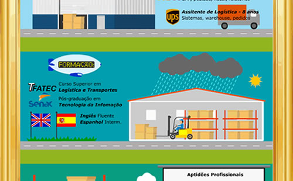
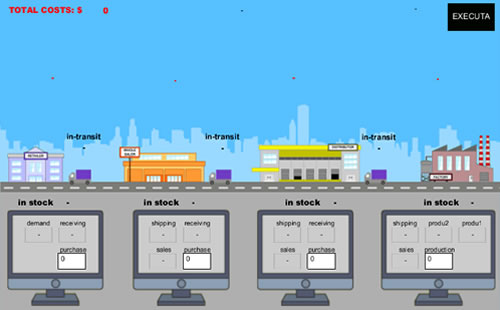
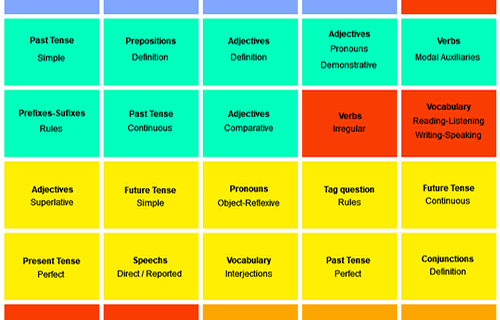
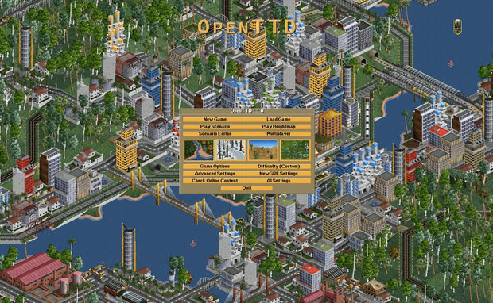
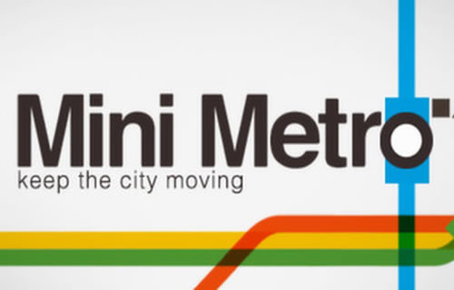

Bem-vindo!
Meu nome é Maikom, atuo na área de logística e cadeia de suprimentos com interesses em tecnologia da informação.
Este é um local onde resumo o histórico profissional, compartilho conteúdos e alguns hobbies.
Postagens

Outro Currículo
Currículo um pouco diferente, criado através de um pequeno hobby
Beer Game
Famoso jogo de cadeia de suprimentos que simula alguns conceitos importantesEm construção

English relevant topics
Temas importantes para aperfeiçoar a língua inglesa
OpenTTD
Simulador de transportes de código aberto que aprofunda conceitos de logística e cadeia de suprimentos
Mini Metro
Um quebra-cabeças básico de transportes que ao mesmo tempo pode se tornar complexoVídeos
Sobre temas de logística, cadeia de suprimentos e tecnologia.
O critério de seleção foi a simplicidade da explicação, e esse tipo de clareza costuma aparecer mais em vídeos em inglês.
IMPORTANTE: o vídeo só é carregado quando você clica no play. Para assistir em resolução maior, clique depois no símbolo do YouTube.
Six Sigma In 9 MinutesSimplilearn
Fishbone Diagram (Ishikawa): Explained with examplesLEARN & APPLY : Lean and Six Sigma
Scrum vs Kanban: Difference Between Scrum And KanbanSimplilearn
How to Measure Supply Chain PerformanceSkillsoft
Value chain explainedInternational Labour Organization
5 Key Metrics for Last-mile LogisticsAbivin
What Is The Bullwhip Effect: Demand AmplificationLeanVlog
What is Just-In-Time Inventory? JIT ExplainedRacklify
Incoterms Explained: EXW, FOB, CIF, DDP and MoreFinDucation